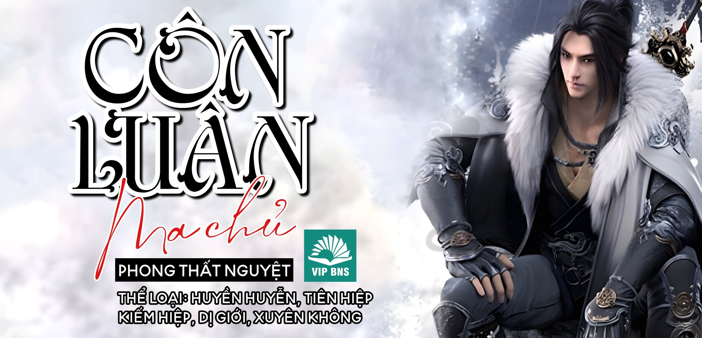

MeTruyenchu - Đọc truyện miễn phí, không quảng cáo

Mô tả:
Sinh ra trong thế gia giàu có, liệu có phải là một chuyện đáng vui mừng? Chí ít nửa đời trước Lâm Diệp vui vẻ, cho tới khi mũ trò chơi mà y vừa mua nổ tung ngay lần đầu sử dụng. Tỉnh lại với một thân thể mới, một thân phận mới. Y vẫn là thiếu gia trong thế gia giàu có, chỉ có điều nơi này đã ko còn là thế giới hiện đại của y, ngay cả cái tên cũng đã thay đổi. Tên mới của y là Sở Hưu, thế giới hiện tại chính là ĐẠI GIANG HỒ, một trò chơi mà y say mê trước lúc chết. Khoan, Sở Hưu? Đây chẳng phải là tên trùm phản diện trong phần ba của trò chơi, Giáo chủ Côn Luân Ma Giáo gây họa khắp giang hồ? Tên thì đúng, người cũng đúng, chỉ có thực lực và thời gian là không đúng. Lúc này Sở Hưu chỉ là một thiếu gia ăn chơi của gia tộc nhỏ, thực lực yếu kém, bị chèn ép và khinh bỉ không ngừng. Lợi thế của y là gì? Y phải làm gì trong tương lai, tìm cách bước theo con đường trong cốt truyện gốc để trở thành Giáo chủ Côn Luân Ma Giáo hay tự đi ra con đường riêng cho chính bản thân? Hay cứ bắt đầu từ bước đầu tiên... thâu tóm và trả thù gia tộc của mình trước đi đã! “Giết người tru tâm, nhổ cỏ tận gốc. Ta là SỞ HƯU, hưu trong vạn sự giai hưu.